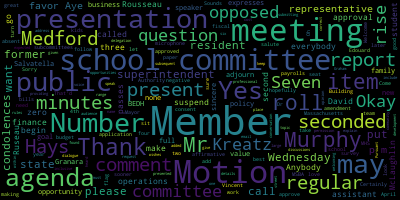

[U1EIl_L-LWc_SPEAKER_00]: to roll call member Rousseau.
[mo_l7RopgYo_SPEAKER_19]: Member Graham.
[Lungo-Koehn]: Here.
[mo_l7RopgYo_SPEAKER_19]: Member Hays.
[kZGTRaqmFyM_SPEAKER_05]: Here.
[mo_l7RopgYo_SPEAKER_19]: Member Kreatz.
[Lungo-Koehn]: Here.
[mo_l7RopgYo_SPEAKER_19]: Member McLaughlin.
[kZGTRaqmFyM_SPEAKER_05]: Here.
[mo_l7RopgYo_SPEAKER_19]: Member Mustone.
[Lungo-Koehn]: Here.
[mo_l7RopgYo_SPEAKER_19]: Member Ruseau here. Mayor Lungo-Koehn.
[Lungo-Koehn]: Present. Seven present, zero absent. If we all may rise. Are there any student representatives on? No student representatives. If we all may rise to salute the flag.
[SPEAKER_03]: I pledge allegiance to the flag the United States of America and to the Republic for which it stands, one nation under God, indivisible, with liberty and justice for all.
[Lungo-Koehn]: We have the consent agenda, bills and payrolls, regular school committee meeting minutes from April 4th, 2022. Motion to approve. Motion for approval. Member Hays, do you have a question before the roll is called?
[kZGTRaqmFyM_SPEAKER_05]: I did have a question, just that my name was left off of the attendance.
[Lungo-Koehn]: Okay, we need to just make that amendment to the minutes from 4.4.22, add Member Hays as present at that meeting. Motion for approval by Member McLaughlin, seconded by Member Kreatz. All those in favor? Aye. All those opposed? The minutes are approved. Number four, reports of subcommittees. We do not have any. Welcome, everybody. I'll just let everybody sit down before you go to your... Come on in, take a seat. Oh, I love you.
[U1EIl_L-LWc_SPEAKER_00]: Good evening.
[yrx76KKBXT8_SPEAKER_04]: I'd like to open my remarks this evening by acknowledging that many members of the community are here to voice their opinions and concerns about a personnel matter. In addition, I have received email communication as well, and I have responded that I am legally obligated to maintain confidentiality when it comes to personnel records. All human resource personnel matters are confidential, and neither I nor any member of the school committee are able to respond to any questions or comments regarding personnel. I thank you in advance for your understanding. The COVID update. This morning, the Medford Public Schools Health Services Department notified our team that events involving Medford students that occurred outside of school were likely places of COVID-19 transmission. Due to the extenuating circumstances surrounding these events, our team of school nurses have engaged in contact tracing specific to these events. We do have evidence of a slight uptick in positivity concentrated at our secondary level, and we will continue to monitor these events to defend against any type of surge. I remind you as always to participate in the DESI-sponsored rapid testing program to help to continue to put the pandemic behind us. Additionally, on Wednesdays here at City Hall, there will be vaccination clinics happening in our Board of Health on Wednesdays from two to six, this Wednesday, April 13th. And the shots that are available are Moderna for 18 plus and Pfizer for 12 plus. First shot, second shot and booster shots are available. Only 25 people have registered thus far. Please pre-register so that your medication can be reserved. Also, history is all around us. As we come upon the Patriots Day holiday, we know Medford played an integral role in the American Revolution and is actually mentioned in the now famous Longfellow poem, The Midnight Ride of Paul Revere. We remember how groups of minutemen came from neighboring towns to line up at Concord and Lexington to face at the time, the strongest empire in the world, the British Army. This description sounds eerily similar to what is happening now in the Ukraine. Colonial America wanted to live in freedom from Britain, and clearly Ukraine would like to remain free from Russian influence. Lessons from the past can often teach us lessons about the present and future. History is all around us. Last week, we were able to witness the appointment of the first African-American woman, Judge Katanja Brown Jackson, to the United States Supreme Court. Judge Jackson is the first, but hopefully not the last, African-American woman to grace the court. Her appointment may have taken 232 years, but as Judge Jackson stated, we made it. Our children see that in America, anything is possible. I'd like to extend special congratulations to the Medford High School's Drama Club for their outstanding presentation this past weekend of Legally Blonde. Special thanks to Mr. Shankady, Mr. Brauch, Mr. McLaughlin, Elvin Keith from Spotlight, the Votes Graphic Arts Program, the parents and backstage crew for helping the student actors present this performance. The arts have been especially hit hard by the pandemic, and it was wonderful to see the students shine in this production. Additionally, the Medford Vocational Technical High School opened its program to the public for the first time in over two years. Parents and students were able to see the shops in action. especially the shops that have been moved to new spaces, cosmetology, electrical, robotics and engineering, and the school store. I know a number of eighth grade students really were impressed by the offerings at our vocational school. Thank you to member Hays and member Kreatz for attending the event last week. As you are aware, April vacation begins April 15th, as the schools are closed this Friday, Good Friday, and the following week. I know the mayor has planned Patriot's Day activities for the 18th, and the Chamber of Commerce will be hosting a pancake breakfast that morning at St. Joseph's Hall from 8 to 10 a.m., from 9 to 11 a.m. at St. Joseph's Hall. Patriots Day reminds us of the Boston Marathon bombings. We lost a former student, Crystal Campbell, who was killed while waiting for her friends to cross the finish line. The Mustang Girls softball team organized the annual Crystal Campbell Memorial Softball Tournament in her memory, with proceeds benefiting a scholarship in her name. The tournament returns to Columbus Park on Saturday, April 23rd and Sunday, April 24th. There will be raffles, a 50-50, and a concession stand. The other teams participating include Bullerica High School, Arlington Catholic High School, and Swanscott High School. Come out and cheer on our Mustangs! With April being National Autism Awareness Month, the brand new Mustangs Boys Volleyball Team will host an autism awareness game against Malden on Wednesday, April 27th at 4 p.m. in the high school gym. T-shirts are being sold now. The day of the game, there will be a bake sale and a 50-50 raffle. All proceeds will be donated to the Medford High School Unified Sports Program. So there are also a number of holidays that are taking place this month in April. Ram Navami A. It's a Hindu celebration. It was celebrated yesterday, April 10th. Passover is April 15th. Easter, this Sunday, April 17th. And Orthodox Easter is April 24th. And with a number of COVID regulations lifted, I'm sure many family and friends will be able to gather together safely and enjoy their time celebrating together. To our Hindu families who celebrate Ram Navami, or the birthday of the God Ram, we wish you divine blessings of Sri Ram along with peace and prosperity. To our Jewish families who celebrate Passover, which commemorates the emancipation of the Israelites from slavery, we wish you a happy Pesach, which is Passover in Hebrew. to our Christian families who celebrate Easter and Orthodox Easter. We wish you a joyful celebration. Wishing everyone a safe, restful and enjoyable April vacation.
[Lungo-Koehn]: Thank you, Dr. Edouard-Vincent. Number two, we have report on Massachusetts School Building Authority MSBA application. Mr. David Murphy, assistant superintendent of finance and operations.
[Gordon]: Mr. Murphy. Thank you, Mayor. Good evening, members of the school committee. So this, tonight's report is a continuation of the initial presentation that you received on January 24th, and then a follow-up presentation that you received on March 21st. And you'll recall that on March 21st, the administration reported that after a consultation with a variety of other districts who have been through MSBA projects, as well as consultants who have helped shepherd some of those projects through, and an analysis of our own data with respect to our flagship school, Medford High School, we determined that between the two MSBA programs for which the application window had opened on January 28th and would conclude later in the spring, that we would be submitting a statement of interest under the core program for Medford High School. And I do want to just provide a little bit of context for that because I know this is an important issue that has received over the years a lot of attention in the community. And it's an issue that a lot of people rightfully feel very strongly about. Our decision to submit a statement of interest and our request to you to authorize us to do so is not an indication that there will be wrecking balls pulling up to Medford High School imminently. What it is, though, it's an opportunity for the Medford public schools to potentially enter the MSBA pipeline of potential projects, either new construction or significant rehabilitation. And then it gives us the opportunity later on this year and in succeeding years to go through all of the very extensive due diligence process that the Massachusetts School Building Authority affords to communities that are looking at projects like this to make a determination as to what is in the best interest of the Medford community. That is, uh, it is, we are months away from a determination as to whether or not we would even be accepted into the pipeline. And we would be years away from any, uh, determinations being made by the, by the community. And ultimately it is a determination that will be made by the community at large as to whether to move forward with this, with this type of project. So, um, the stage that we're at right now is that we are, we're preparing our statement of interest to submit prior to the April 28th deadline. to sort of cut to the chase for tonight's presentation, that requires, among some other procedural steps, a vote of the governing body of the school system to authorize the superintendent to submit that statement of interest to the core program. The statement of interest will detail, both from an operational perspective and an educational perspective, why we believe Medford High School has reached a point in which a core program Rehabilitation or new construction would be necessary and you'll see in the memo that I provided to you a summary of those that are essentially bucketed into two categories and that just for again for background purposes There are eight priority areas identified under the law governing the MSBA core projects. We've identified two that we think are specifically appropriate to the state of Medford High School. The first, known as Priority Five, deals with some of the operational deficiencies. And you'll see, again, in the memo, that relates to antiquated windows and eight-faction system, electrical systems, plumbing systems, all of which, and this is a term that you'll likely be hearing frequently throughout this process have outlived their useful lifespan or are no longer There is a phrase that you'll hear frequently, but I just, I messed it up. So they've outlived its useful life expectancy, and in many cases are no longer operable. So that has to do with wildly fluctuating temperatures and inability to control the temperature in a way that we would prefer to make the learning conditions conducive. And we know that that certainly has an exacerbated impact on some of our more vulnerable student populations. All of this will be detailed in the statement of interest. And then in priority seven, which is the secondary, the second category, That's addressing some of the academic and vocational implications to a building with the type of deteriorating infrastructure that Medford High School has. So all of that's going to be bucketed, put into our statement of interest. We've had some constructive conversations with representatives from the MSBA already. That's in no way an indication that our application will be received favorably, but it's certainly, we think, a positive sign that we're on their radar. Some of the representatives that we've spoken with have actually been involved in some of the previous tours of Medford High School, but the last official tour was several years ago, and we think we have a compelling case that can be made. So on the screen in front of you is the language of the motion that we are requesting. You've already received this in writing, but I'll just read it very, very briefly, or as quickly as I can. So this is a motion to authorize the superintendents of schools to submit a statement of interest on behalf of Medford High School to the core program of the Massachusetts School Building Authority prior to April 20th, 2022, emphasizing the operational and educational implications of challenges posed by the infrastructure of Medford High School. Specifically, the superintendent is authorized to address the need to potentially replace, renovate, or modernize the school facility systems, including but not limited to roofs, windows, boilers, heating and ventilation systems, and the need to increase energy conservation and decrease energy-related costs in the school facility. And further, the superintendent is authorized to articulate the academic and instructional obstacles posed by the school's current infrastructure and the need to potentially provide for the replacement of or addition to any obsolete facilities in order to provide for a full range of academic and vocational programs for students of Medford High School. As you can probably tell, the language of the motion is lifted from the statutory language and those two statutory priorities. And this is just an attempt by the administration to put us in the most favorable position possible to submit that statement of interest and hopefully be received favorably by the Massachusetts School Building Authority. So with that, I'm happy to take your questions and would ask you to entertain that motion so that we can submit that statement of interest.
[SPEAKER_07]: Member Kress, if you just want to turn on your microphone, please. Sorry, I always get them mixed up, sorry. Yeah, so I'm making a motion to approve the language in the MSBA statement as stated so that the superintendent can submit the statement of interest on behalf of Medford High School to the MSBA. Thank you, Member Gretz. Seconded by Member McLaughlin.
[Lungo-Koehn]: Roll call, please. Mayor. Member Ruseau. Just want to turn on your microphone, please. Sorry.
[mo_l7RopgYo_SPEAKER_19]: Will we be discussing the presentation after we take the roll call, though, or will we be moving on?
[Lungo-Koehn]: Do you want questions before? Questions before we call the roll? That'd be great. Thank you.
[mo_l7RopgYo_SPEAKER_19]: I read the draft findings, and there were some pretty startling and, frankly, upsetting parts to it that we use. more than three times as much energy than we would need to to be considered net zero. 77% more energy than the average for the entire United States per square foot. And then, honestly, the most upsetting part was that it will be at a minimum $10 million just to get rid of all of the hazardous materials that our kids are, I realize not all of them are exposed, but to get rid of the PCBs, lead paint, asbestos, I think that $10 million is an awful lot of money, and that does not include the labor or replacement costs of anything that we actually would be mitigating. So I, I'm a little upset that this is where we are, that we're multiple years away from having a building that does not have that stuff removed. It's really hard to deal with that. So I just, I obviously support this and I'm wondering when we can expect to get the final draft, not the final draft, but the final report.
[Gordon]: Sure. Thank you for your question, Mr. Rousseau. So the report that Mr. Rousseau is referencing is a report by the vendor who we retained to complete the facility condition assessment, which is a preliminary step in order to provide the technical analysis necessary to provide the most, hopefully provide the most competitive statement of interest. And so I think with respect to the final draft, certainly before April 28th, and I think my hope would be within the next week or so, The draft report, which you have, as you mentioned, does highlight a number of very concerning challenges that we're facing in the building. I wouldn't say any of them are particularly surprising. And with respect to the hazardous materials, I referenced this in the memo, but I just want to say it publicly and as clearly as possible, the report does not indicate that there are hazardous materials to which students and staff are exposed to. What it references is that due to the age of the building and particularly the era in which it was constructed, to deconstruct it, which would be necessary for a significant building rehabilitation, would have significant abatement costs that would be associated with it due to the hazardous materials that are essentially embedded in the building that you could be exposed to if that type of construction were to take place. So I want to be very clear that we do not have a report that indicates that there are hazardous materials to which students and staff are currently exposed. That being said, to your point, that's why you don't want to be in a 50-plus-year-old building, because that's not the type of infrastructure that you want to be having school in day in and day out, which is why we're pursuing this path. With regard to the energy efficiency, I think you're right that one of the more glaring pieces of narrative in the report that will certainly be a significant part of our statement of interest is this idea that we're expending 77% more energy than the typical high school. I don't want to walk away from those numbers at all, because I think they helped make our case, and I think they're highly favorable. But I would just say that with all data points of that nature, the framing of it is really important. And so we have a very large high school that was constructed for a student population significantly larger than the one that we currently have. In the last year, we have done a significant amount of repairs to improve our HVAC systems, and in a lot of cases, brought systems back online that I've as it's my understanding, have not been online in several years. In doing so, we've watched our utilities expenses go up significantly and our energy efficiency has declined in turn. So it's sort of the other end of the presentation that I made before you several times last year about how we were bringing all our HVAC systems back online and improving our air exchange quality, which we did, but in doing so, we've made our building even more energy inefficient, which is part of one of several reasons that we feel it's necessary to pursue this course.
[mo_l7RopgYo_SPEAKER_19]: Thank you. I signed the bills, as you know, and the warrants, and every single week I'm signing $10,000 plus electric bills, and it's a bit I mean, I don't know what a bill should be for such infrastructure, but it doesn't take a rocket scientist to realize this is not an appropriate and lowers the answer, but a lot lower. I mean, I just couldn't even believe how big those are every single week.
[Gordon]: Yeah, we're a 600,000 plus square foot building, a typical comprehensive high school, inclusive of our vocational programming, based on other buildings about the size of ours and size of the student population. And again, Chapter 74 programs really are the distinguishing variable, making us a comprehensive high school. You're more likely looking at a 400 to 500,000 square building, possibly even smaller. There are upsides to having a building of our size and there's some flexibility that we can do, but it's not in keeping with the sort of contemporary principles of the School of Instruction.
[U1EIl_L-LWc_SPEAKER_00]: Thank you.
[Lungo-Koehn]: Motion by Member Kreatz, seconded by Member McLaughlin. Before the roll is called, I just want to thank you, Mr. Murphy and the superintendent and the team for all your work on this and making sure our kids get the best at MHS, hopefully sooner than later. If you may call the roll, please. Certainly.
[Announcer]: Member Graham?
[Lungo-Koehn]: Yes.
[Announcer]: Member Hays?
[Announcer]: Member McLaughlin?
[kZGTRaqmFyM_SPEAKER_05]: Yes.
[mo_l7RopgYo_SPEAKER_19]: Member Mustone?
[Lungo-Koehn]: Yes.
[mo_l7RopgYo_SPEAKER_19]: Member Verso? Yes. Mayor Longo?
[Lungo-Koehn]: Yes. Seven in the affirmative, zero in the negative. The paper passes. Thank you. Number three, we have report on budget survey for fiscal year 23. Mr. David Murphy, assistant superintendent of finance and operations.
[Gordon]: Thank you, Mayor. So turning our attention to both our quarterly budget update with regard to FY22 and our planning for FY23, we have a deck that was circulated to you this afternoon, and I'll just walk through the beginning of it with respect to some updates that I provide you each time we do our quarterly budget update, but again, to make sure that we have context and putting the sort of appropriate parameters around the conversation. So our FY22 operating budget is $67.4 million. I will also add the caveat, as I do each time we talk about the budget, that these are estimates. I didn't put the squiggly line next to each and every number on the presentation, but I'm assuming that at this point, you can imagine that it's there because it usually is. So $67.4 million is our FY22 operating budget. That's inclusive of the $3.7 million of ARPA funding that was incorporated into the budget. And then as I reported to you in our quarter two update, our estimated ESSER expenditure currently for FY22 is $1.4 million. That's some staffing positions that are specifically designed to mitigate the impact of the pandemic on students. That's extended day programming, particularly in math at the elementary school level, as well as some summer programming and school vacation programming that we've run. to try to again mitigate that instructional disruption that we know students have faced as a result of the pandemic. So that number is important for a few pieces of information that I will provide in just a moment. we can go to the timeline slide next. So this is, there have been some adjustments in the timeline that I've communicated to you, but our general structure of taking the basic data that you received this evening, and then having a series of budget hearings focused on our four, the pillars of our FY23 budget, specifically equity and supports for most vulnerable and high need students, technology utilization and how, The strategic investments that we've made over the last several years are going to be continued in FY23 and beyond. Our organizational structure, which is to the point that was made by multiple committee members with regard to the budget being an opportunity. to sort of provide as much transparency into the school district as possible in our operations. And then the COVID mitigation budget hearing will focus both on the ESSER funding priorities, as well as the other funding priorities that are specific to rebuilding the instructional infrastructure that we know was damaged during the pandemic. And then we're going to provide an additional date for some miscellaneous priorities that may come up in the course of the discussion of those four hearings. Just to, again, go through the sort of timeline and the sequence of events, after the administration and superintendent make the recommendation with regard to a budgetary request, the school committee will vote to make that request. That request will make its way to city hall, to the mayor's office. The mayor will then make a recommendation to the city council, and then the city council will make an appropriation to the school department, which the school committee will then come back and take a vote to adopt. The point that I've made every time I've made one of these budget presentations, and you'll, I think, hopefully remember it from last year, The school administration understands our responsibility to provide for a variety of contingencies with respect to the budget. So the initial number that you are presented with will be based on a factual assessment of the needs and priorities of the school department and what we believe is necessary to create the optimal conditions for learning. We also understand that the municipal government, the city council, as well as the mayor have priorities citywide that need to be addressed and we will be prepared to implement whatever budget is ultimately appropriated. And so I know that that part sometimes has led to some confusion, but I just want to reiterate again, we're going to present a budget to you based on the school department's priorities and what we believe is in the best interest of students. But at the same time, we fully understand that we are a constituent part of this community. that the mayor and the city council have to balance those priorities. And when that appropriation is made, the school administration will be prepared to implement the budget as it is ultimately appropriated. And that will happen in June. And we can, moving on. So this is an important part of the beginning of any budget conversation. It's talking about our fixed cost increases. And as is not unusual, because as a school department, as every school department, our budget is mostly made up of personnel. We're an organization made up of people trying to educate people. And so that's where most of the taxpayers' money goes. And you'll see that with regard to our fixed cost increases, of $850,000, that is usually, and this coming year is no exception, the largest number with regard to our anticipated fixed cost increases. So those are step increases and other contractual increases. that we know that we have to budget for in FY23. Some of the other numbers, and these numbers are not insignificant, so I don't want to just skip over them. We are coming up on the third year of a 311 transportation contract with our primary vendor. Eastern bus that was a contract that was approved in Excuse me in the spring of 2020 that has a fixed cost increase of $20,000 We included this row because it's a rare bit of good news with regard to fixed cost increases thanks to the hard work of representatives from my office, particularly Ms. Kingdon, our comptroller, who's been working with our copy machine vendor, Ricoh. We've been able to identify some efficiencies and some services that are not utilized at all by the school department. or at least not in a cost-efficient manner. And so we're anticipating a $20,000 savings in the extension of our RICO contract for FY23. We have some built-in costs, including the expansion of some translation services that we committed to during FY22, which was a discounted initial year, but there's an additional cost coming on based on that contract of $16,000. The maintenance services contract, I'm sure that the committee is aware that we have a vendor that provides our maintenance services during the night shift at the McGlynn School, as well as Medford High School. That contract expires in November, and so that contract will be going out to bid most likely this summer, and so we'll need to prepare for potential increase in costs with respect to that. On the utilities front, going back to a conversation we had just a few moments ago with regard to the MSB application. We are going to finish the year over budget with regard to our gas expenses. We think there are some reasons for that, both in addition to the increase in the cost of gas, as well as some of the COVID mitigation strategies that have been employed throughout the district. And we're also expecting to see a more modest increase in our electricity bills. And again, that is connected to some of the repairs that we've done over the course of the last year. The $155,000 in contractual services and subscription services is an estimate. Hopefully it's a liberal one. Hopefully those will come in. We're going through them one by one. There's some ongoing negotiations with regard to those renewals. But that essentially represents a 4% increase in contractual services. is everything from the various electronic platforms that we use to run our HR systems to our teacher educator evaluation systems to a variety of other platforms. And then there's a host of instructional subscription services that are up for renewal as well. So some of those have been and maybe continue to be appropriate to apply to some of our ESSER funding. But as we get into the deeper conversations with regard to our ESSER funding, ESSER funding being the direct to school district COVID mitigation funding coming from the federal government, we have to be mindful of the non-reoccurring nature of those funds and the importance of avoiding fiscal cliffs. And so we'll just move on. On the instructional side, we have, you received multiple presentations over the course of the last year, including in your April 4th meeting, in which we had committed to a new elementary school math program after an extensive piloting and a lot of research by Dr. Khan and Mr. Lucey and several others, especially a lot of teachers that have helped develop that as a priority and identify it as a strategy. for the district. There is a cost associated with that. There will be some savings as well for the programming that we're moving away from, which should offset that. But just to identify a number, and these numbers are not set in stone. In fact, the negotiations are still ongoing between the district and the vendor. for transparency purposes and to make sure that you understand that there is a significant investment coming forth with respect to the Investigations III math program. We're estimating at this point $100,000 per year, plus additional costs with respect to professional development opportunities for teachers participating in that program. as well as potential FTEs devoted to math coaches. And in a minute, we'll talk a little bit about the response to the budget survey that committee members filled out. And I know instructional coaches was identified as a personnel priority for several members of the committee. And you'll recall last budget season that it was a priority for the administration as well. But at the time, we felt that we needed to have the programming in place prior to establishing the personnel structure to support that programming. So there's a range here, because there are some strategic decisions that will have to be made in the course of your budget deliberations, and we'll talk about that both, I think, during the organizational structure budget hearing, as well as in the equity budget hearing as well. Right now, we've got a placeholder in of 195,000 to 410,000. And this is sort of your first, I guess, sneak peek at some of the budgetary priorities that will be coming before you in the coming weeks. And I hope not a surprise because it's, again, the math coaches have been something that we've talked about for several years. And we think now that the timing is starting to align. between that priority and the structure that we need to put them in place. Finally, at the bottom of that slide, you'll just see that as we've discussed throughout the course of this year, our collective bargaining agreements are up. I know there's a number of members of the organization, the community, and I suspect in this room that are aware of that. And those negotiations are ongoing and we're looking forward to bringing those hopefully to a conclusion in the near future. And so that is a budgetary estimate with respect to their potential impact. And next, we have news from Beacon Hill. I imagine some of you are aware that Governor Baker's budget that was released and is currently being deliberated by the state legislature included an 8.8%, I think I have that number right, although I'd ask that he not quote me, an 8.8% increase in Chapter 70 funding. So this is a significant investment, one that is reflective of more favorable revenue conditions that the state is experiencing right now. And so districts across the Commonwealth are seeing both, at least for this fiscal year, a fulfillment of the Student Opportunity Act commitments that were passed in 2019 or 2020, I believe it was fall of 2019. and also increases with respect to Chapter 70. So when you look at this number, you can see that the state, the governor's budget, and typically we're not gonna go down historically, we're gonna go up from there, is a $1.6 million increase in the Medford Chapter 70 allocation, as well as a $2.2 million increase with regard to the required local contribution. Um, I put the asterisk there because, um, as, as you know, uh, Medford is already far exceeding, um, our, uh, and I'm editorializing there a bit with regard to the word far, but we are exceeding our, uh, chapter 70, uh, allocation in our, in our local contribution. And so, um, we are grateful to the mayor and to the city council for that prioritization of education. But it also means that that essentially subsumes that increase, and these numbers don't necessarily mean what they would for us if we were at minimum funding. So we're grateful to that. We also think that this is reflective of the accelerating costs that we're seeing, particularly in a post-pandemic environment. And when we look at the ESSER funding as non-reoccurring, it sort of speaks to the importance of making sure that the necessary funds are incorporated into the operating budget to address reoccurring expenses that we know come with teaching and learning. So that's where we are at the state level, and that, again, will be reflected in the priorities that come before you. With regard to the budgetary priorities that have been identified by the school committee that will be reflected in the budget hearings that we will address, I know this has been going on for some time, so I will just say that there's only a couple of slides left, and I appreciate your indulgence. With regard to the critical priorities, what we've heard from all stakeholders that we've engaged in thus far is the importance of identifying social, emotional wellness and mental health, understanding that, again, that the impacts of the pandemic go well beyond academics. And so from a staffing perspective, from a professional learning perspective, and really from every other strategic perspective, what you'll be seeing in the budget is a prioritization of the wellness of our students to make sure that they are both prepared for life and prepared to learn instructionally and otherwise. A number of committee members have identified the reduction or potential elimination of fee-based services. I would just say that the administration has heard the committee loud and clear with regard to that principled position, and we're going to do our best to identify the strategies necessary to effectuate that goal. We have our CTE position postings, with the exception of the open and continuous postings that went up in the first week of March, we have CTE postings that are already up, understanding that we've got programs that are growing there and we need to make sure that we're staffed appropriately. And then the summer and extended day programming that we've been able to engage in over the course of the last year, that will certainly continue in FY23 as well. On the personnel front, I've already touched upon a number of them already, so I'm not going to read bullet by bullet there. And then we can move on to some of the other areas that we'll be talking a little bit about in the hearings. Having a plan to backfill and replace technology that becomes antiquated or is in need of repair is a piece that you'll be hearing about, as well as some of the other curriculum pieces that we've already discussed tonight, including investigations three. Professional learning and professional development is a priority of every school system, but making sure that it is effective, that it is relevant, that we're not sending staff to PD that doesn't necessarily apply to their role in the organization. and making sure that it's innovative and helping to prepare students for current learning conditions is what's important. And then with regard to the equity and the student support pieces, again, these are some of the things that we've talked about in previous budget cycles, some of which we've been able to implement over the course of FY22 and others that we'll be continuing to explore how best to implement in FY23. These are some of the bullet points that we'll be needing to look at, as again, there's a major variable with respect to the number of collective bargaining agreements that are open, and negotiations are ongoing there. A piece that I think we're gonna hear and we're gonna have to discuss in a very substantive way during the budget process is that we know that the ARPA funding and the ESSER funding are one-time funds. The one-time funds spread out over multiple fiscal years, which is significant, and I think it's been a game changer for us with regard to the impact we've been able to have on students to try to mitigate the impact of the pandemic, but they're not reoccurring funds. And so we do have a responsibility to try to avoid the types of fiscal cliffs that can be problematic for the organization in the future. And that will require a lot of strategy and engagement with all stakeholders. That'll be part of what we'll do with the budget hearings that are going forward. So I appreciate your indulgence going through that 60, it's not as easy to spend $67 million as it may seem. And so that's why I think it's important from time to time to go through these and as detailed a fashion as possible so that we can try to answer your questions and try to provide as much information as possible to the community. And with that, I'm happy to take your questions.
[kZGTRaqmFyM_SPEAKER_05]: Member Graham, on the topic of transportation, when we have the budget hearing, will you be talking to us about the efforts that we piloted this year to make getting to the high school fee free for students who are outside of two miles and the review that you all were doing to bring that outer threshold in from two miles to something less than two miles.
[Gordon]: Thank you, Ms. Graham. I would anticipate that being a topic in the equity and student support budget hearing. I will say, and I think this has been referenced before, but the pilot program that we run this year costs approximately $9,000 to provide the MBTA passes to students outside of that radius. I mentioned that the Eastern bus contract has one year remaining. In light of the flexibility we have with regard to the one-time funds under ESSER, I think it is possible for us to recommend that we continue the pilot into a second year. I also think it's important that we analyze how effective it's been in really giving students the type of flexibility that the pilot is intended to do, because I don't want to continue to spend $90,000 if it's not being utilized. When the bus contract expires at the end of going into FY 24, and this is not a reflection in any way on Eastern Bus, which is an important partner of ours, I think we will have to look at putting out bid specifications that are consistent with that goal. And ultimately, I think that's probably going to be the more cost efficient way to effectuate that goal that the committee has set.
[kZGTRaqmFyM_SPEAKER_05]: Thank you.
[Gordon]: Thank you. I guess I just kind of gave you a preview of that hearing as well, but maybe we'll move faster that night.
[kZGTRaqmFyM_SPEAKER_05]: Okay.
[Lungo-Koehn]: Sounds good. Member Ruseau.
[mo_l7RopgYo_SPEAKER_19]: Thank you. Can you remind me, cause I feel like I have to be reminded every year food services will or will not be part of any of our budget presentations.
[Gordon]: So the food services runs on a revolving account, which certainly I think all the revolving funds should be identified. in the budget process. It's separate from the operating budget, and so it's not part of that conversation. But I think for making sure that we're making the community and the committee aware as to the health of the revolving fund, participation, which I'm grateful to say, has risen somewhat significantly this year, and we're in a relatively favorable position with regard to that revolving fund. So it's not really part of the operating budget, but I think it's something that's good to check in on at the end of the year, which we're obviously approaching.
[mo_l7RopgYo_SPEAKER_19]: Great, thank you. And last year, forgive me for the date, we had passed a motion to make meals free, which unbeknownst, I don't remember who else co-sponsored that, but unbeknownst to the folks that put this on our agenda, the federal government over that weekend announced they were going to make it free for every school district across the country. But our motion did not indicate that it was free during the pandemic or free for a year. It was free, period. And so I think as long as that language is still understood and clear, I'm fine with that. But I do think that unless somebody is willing to put a motion on to start charging kids, the policy of our committee is that we will not be going forward. And I just don't have any idea what that's gonna really cost us.
[Gordon]: Yeah, so the administration may well be willing to ask for a motion to that effect, frankly, because while the revolving fund is healthy, it's not something that we have a clear plan on as to how to make that transition for the next three years. I think, as I said, I think that the reduction or elimination of fee-based services is something that this committee has been emphatically clear on, and it's something that the administration has worked to explore all avenues As I said, with regard to transportation, I think we have a plan for that. With regard to the food services, I think that's going to be more difficult. And I can't say at this time that I'm overly confident that it's something we'd be able to implement for the 22-23 school year. Again, the committee's priority is clear, and it's our responsibility to develop a strategy, a plan, or some type of contingency to come back to you on. And I think we will be doing that, again, part of that equity discussion. But I can't identify a way to implement that as of right now.
[U1EIl_L-LWc_SPEAKER_00]: Thank you.
[Lungo-Koehn]: And just to follow up on that, I'll look into it from the delegation, but has the state, have you heard of any discussions in the state?
[Gordon]: Discussions, but nothing definitive yet.
[kZGTRaqmFyM_SPEAKER_05]: I was just going to say the same thing. I think there is discussion on Beacon Hill about this because the federal legislation has effectively died on the vine. So I think there is discussion and for folks who are passionate about this, letting your state reps know that this is important to you would be a wonderful reinforcement of priorities here in Medford, for sure. And then I did have another question and I'm forgetting it now, so I will see if the board members.
[mo_l7RopgYo_SPEAKER_19]: Thank you. Yes. On the school meals, there is a, there's a forum on Thursday for the school meals that representative Vargas is running specifically because the federal government's sort of fallen flat on this effort. And I'll be attending that hopefully to find out how we can push because to suddenly start you know, the fact that participation went up is entirely not surprising. But the other way of describing participation going up is kids weren't eating who needed to eat. And that doesn't, none of us are surprised by that, but we have actual numbers now. So I think,
[Gordon]: I would be remiss if I didn't mention that our district food manager, Joe Ricci, part of Jules Bradley's staff has been working hard to diversify the menu and to engage students more. Again, I think their staff knows that we know that we want to see participation grow higher and deeper. And so it's something that's definitely a work in progress, but I do want to credit them for the work that they've done over the course of the last year.
[kZGTRaqmFyM_SPEAKER_05]: Member Graham? Sorry, I remembered my question now. Before your time, I believe, the sequence of events is foggy because of the pandemic, but before your time, we did pass a resolution asking the administration to review with us on an annual basis the status of all of our revolving accounts. And I know that's not part of the mainline budget, but when we talk about food service and another hot topic in the community right now, the afterschool program, those all happen in the revolving accounts. I think generally the public doesn't have a huge appreciation for what happens in those revolving accounts. And it's literally everything from like lost library book funds to food service. So can we, find some time before the end of June to do that review of the revolving accounts and community schools is the other really big one that happens.
[Gordon]: I think we definitely find some time before June. I can just, uh, my office will need some time with the new onboarding CFO. Um, and I don't want to be asking him for a particular question before he's actually moved into his office, but, uh, this will be one of the first conversations that we'll be having so that we can be prepared for that conversation.
[Lungo-Koehn]: Okay. Thank you. Mr. Murphy, could you explain the professional development cost of between $195,000 and $410,000, and why the large range?
[Gordon]: Sure, on the investigation, sorry?
[Lungo-Koehn]: Yes.
[Gordon]: So, as I mentioned, the negotiations with Savas, Thank you. The investigation into how to pronounce the name of the vendor that runs investigations is ongoing, as are the negotiations with regard to those costs. So we have, as is always the case with professional development opportunities, how much is going to be done by the vendor, how much is going to be a train-the-trainer model, all of those are variables that could potentially affect the overall financial impact. That's the $30,000 to $50,000 range. That'll be a placeholder. We'll have it nailed down prior to your vote. I can promise you that. And then the other big variable is if we're going to go down the way of instructional coaches, we have to make a determination as to what the capacity is with regard to FTEs. So, you know, in a world where the ESSER funding was reoccurring and was going to be around in perpetuity, I'm pretty confident that it would be the higher number. and that we would plan to have those schools staffed with that type of capacity at all times. In a world where it's not reoccurring, I think it's more likely that we're gonna have to at least start with fewer FTEs and share those resources between schools, which is the other variable there. Does that answer that question? Yes, thank you. Thank you.
[Lungo-Koehn]: Thank you, Mr. Murphy.
[Gordon]: Thank you, Meredith, thank you.
[Lungo-Koehn]: We have number six.
[Petrella]: Can I address the school committee? If it's about a personnel matter, no. It's not about a personnel matter. I want to suspend the meeting.
[Lungo-Koehn]: Did you put it on the agenda? No.
[Petrella]: I tried to put it on the agenda, but I wasn't allowed to put it on the agenda.
[Lungo-Koehn]: It's put on the agenda the Wednesday before our meeting.
[Petrella]: Yeah, I know. I did get it on Wednesday before noontime. And it was turned down because I didn't dot all my I's and cross my T's. I didn't ask to put I described what I wanted to do, what I wanted to talk about.
[yrx76KKBXT8_SPEAKER_04]: You asked to speak about equity. Yes. And Ms. Weiss said that you would be given the date when there would be an equity presentation. Yeah. She would reach out to you so that you would be on the agenda. That's the last communication that I received.
[Petrella]: And that's it. All right, no. Okay, yes. Yeah, we'll make sure you're on the agenda for the equity discussion. And what about all the people that are here tonight? We can't get on the agenda tonight? We can't suspend the rules for them? Just asking. This is the people right here. They're here for Diane. We all know it, but we can't address it. We cannot discuss personnel matters. We're not talking about discussing personnel matters. Mr. Perchella, we do read all of our emails.
[Lungo-Koehn]: Anybody can voice their opinion on an email.
[Petrella]: I just want you to know that all these people are here tonight for Diane. Thank you. All right? You guys are going to go do your thing, because these people don't matter. And that's the bottom line. That's not true.
[Lungo-Koehn]: Presentations of the public not to begin before 7 p.m. Is there a motion to?
[mo_l7RopgYo_SPEAKER_19]: Mayor? Motion to suspend the 7 p.m. and make it 6 53 tonight.
[Lungo-Koehn]: Motion to suspend the rules by member Rousseau, seconded by second member and the motion is to suspend the the not before 7 p.m.
[kZGTRaqmFyM_SPEAKER_05]: Correct?
[Lungo-Koehn]: That's correct. Okay. Motion by member Rousseau, second by member Graham. All those in favor? Aye. All those opposed? Motion passes. Regular meetings of the school committee include this presentation of the public agenda item to give any resident the opportunity to place a presentation before the school committee. A resident may only present once at any meeting. These presentations are an opportunity for the public to make a presentation to the committee, but are not opportunities for dialogue with the committee. If one or more members of the committee wishes to have a conversation about the topic presented, a member may request that an item be added to a subsequent regular meeting. The details for submitting a presentation can be found within the policy BEDH, public comment, and presentations of the public. Pursuant to policy BEDH, public comment, and presentations of the public, any resident in the audience may be given permission to speak once on any item on the agenda for up to three minutes. The speaker is expected to keep their comments to the item on the agenda. The speaker must begin their comments by providing their full name and full street address. A welcoming, inclusive community is both a value of the Medford School Committee and an aspirational goal. for your help in achieving this goal and value your perspective. We do not have any public participation before us tonight, but anybody can submit an item the Wednesday before an upcoming school committee meeting, as long as it's not personnel related. So number seven, we have continued business and there is none. Number eight, new business and there is none. Number nine, reports requested. And number 10, we have condolences. Member Russell.
[mo_l7RopgYo_SPEAKER_19]: Yes, I believe we did actually approve a report request two meetings ago. So we should just have that added to the agenda and coming in the future. I think that was just an oversight. Thank you.
[Lungo-Koehn]: The Medford School Committee expresses its sincere condolences to the family of Barbara Salvatella, wife of the late Arthur Salvatella. former media teacher and advisor to the Mustang News, the Medford School Committee expresses its sincere condolences to the family of Linda Granara Scali, cousin of former school committee member and former state representative John R. Granara Jr. If we all may rise for a moment of silence. Our next meeting is Monday, May 2nd, 2022 at 6 p.m. Regular school committee meeting, Alden Memorial Chambers, Medford City Hall, and it will also be viewable on Zoom. Motion to adjourn by member Hays. Yes, I believe you can put things on the agenda in person. Should we go to Susie or?
[yrx76KKBXT8_SPEAKER_04]: Yeah, the Wednesday before.
[Lungo-Koehn]: The Wednesday before.
[SPEAKER_03]: It's about people all over. Thank you.
[Lungo-Koehn]: Motion to adjourn by Member Hays, seconded by Member Kreatz. All those in favor? Aye. All those opposed? Meeting is adjourned.
|
total time: 5.64 minutes total words: 850  |
|||
{kind=link}